|
LAZARE CARNOT SU TEOREMA PARA EL TRIÁNGULO Y UNA CÓNICA |
De la observación de las soluciones presentadas a los problemas propuestos, por ejemplo, en el Laboratorio Virtual De Triángulos Con CABRI II de RICARDO BARROSO? y en otros foros; se desprende la aceptación y uso generalizado de teoremas como los de Menelao y Ceva. No ocurre lo mismo con el TEOREMA DE CARNOT que se incluye en pocos libros y en los que lo incluyen, en gran parte, aparece en el apartado de ejercicios. Este es un teorema mucho más general que los anteriormente mencionados que, como se verá, pueden presentarse como consecuencia de éste último. José María Pedret. Ingeniero Naval. Esplugues de Llobregat (Barcelona). Aunque, básicamente, se manejan relaciones de incidencia típicamente proyectivas, es difícil sustraer las teorías de CARNOT del campo de la geometría racional. La obra de CARNOT nace, como la de Monge, animada por un espíritu de generalización de los resultados de DESARGUES y PASCAL y de aprovechamiento de la herramienta del momento, la geometría analítica. Empezamos por su resultado más general y luego lo particularizamos al caso del triángulo y la cónica. Para ello vemos como discurren las ideas de CARNOT hasta llegar al resultado motivo de estas páginas.
El resultado general aparece en la página 437 de su GÉOMÉTRIE DE POSITION como TEOREMA XXXVIII?. Usamos la edición de 1803 reproducida, en la actualidad, por LIBRAIRIE A. BLANCHARD, 9, RUE DE MÉDICIS, PARIS (6e)?. Una vez establecidos para la cónica y el triángulo, usamos EL TEOREMA DE CARNOT y SU DUAL como vehículo para establecer multitud de COROLARIOS y aplicaciones. Establecemos la expresión trigonométrica de los resultados y los mismos como producto de razones dobles que nos aseguran su caracter proyectivo . |
| 0. CONTENIDO? |
1. LA EXPOSICIÓN DE CARNOT EN SU GÉOMÉTRIE DE POSITION? 1.1 nº 363 Ecuación de una curva y sistemas de coordenadas.? 1.2 nº 364-372 Consideraciones sobre las posibles variables a usar en la ecuación de la curva? 1.3 nº 373 Cambio de ejes de referencia? 1.3.1 Caso 1: Nuevos ejes paralelos a los antiguos; con (a,b) coordenadas del nuevo origen? 1.3.2 Caso 2: Los nuevos ejes son dos rectas cualesquiera? 1.3.3 Caso 3: El caso general en que el origen es cualquiera y los ejes son rectas cualesquiera? 1.3.4 Nota: Ejes rectangulares? 1.5 nº 375 Efecto de la traslación del origen de coordenadas en la expresión anterior? 1.5.1 Traslado del origen en una curva de grado m? 1.5.2 Comprobación con CABRI II PLUS? 1.6 nº 376 Teorema sobre los productos de "abscisas naturales"? 1.6.1 Enunciado y demostración? 1.6.2 Comprobación con CABRI II PLUS? 1.7 nº 377 Ampliación del resultado anterior a una superficie curva? 1.8 nº 378 El TEOREMA DE CARNOT para el triángulo y una curva algebraica de grado m? 1.8.1 Enunciado y demostración? 1.8.2 Comprobación con CABRI II PLUS? 1.11 nº 381 El TEOREMA DE CARNOT cuando alguno de los n lados del polígono es tangente a la curva.? |
2. EL TEOREMA DE CARNOT CUANDO LA CURVA ALGEBRAICA ES UNA CÓNICA (m=2)? 2.1 TEOREMA DE CARNOT para el triángulo y una cónica? 2.1.1 Demostración del teorema directo? 2.1.2 Demostración del teorema recíproco? 2.1.4.2 Expresión en razones dobles? 2.2 TEOREMA DUAL DE CARNOT para el triángulo y una cónica? 2.2.1 Dualización del TEOREMA DE CARNOT (FRANÇOIS RIDEAU)? 2.2.2 Expresión trigonométrica del TEOREMA DUAL DE CARNOT? 2.3 El teorema de MENELAO como consecuencia del TEOREMA DE CARNOT? 2.3.2.1 La recta como curva algebraica de grado m=1? 2.3.2.2 Si tres de los seis puntos están alineados? 2.4 El teorema de CEVA como consecuencia del TEOREMA DUAL DE CARNOT? 2.4.1.1 Uso de razones dobles? 2.4.2.1 Las medianas son concurrentes? 2.4.2.2 Las bisectrices son concurrentes? 2.4.2.3 Las alturas son concurrentes? 2.5 El teorema de PASCAL como consecuencia del TEOREMA DE CARNOT? 2.6 El teorema de BRIANCHON como consecuencia del TEOREMA DUAL DE CARNOT? |
3. APLICACIONES DEL TEOREMA DE CARNOT PARA EL TRIÁNGULO Y UNA CÓNICA? 3.1 El TEOREMA DE CARNOT y dos sistemas de cevianas? 3.1.1 Teorema para dos sistemas de cevianas ? 3.1.1.1 Una cónica "aplastada"? 3.1.2 Cónica de nueve puntos.? 3.1.3 Círculo de nueve puntos (de FEUERBACH o de EULER).? 3.1.4 Teorema para cevianas paralelas? 3.2 El TEOREMA DE CARNOT y un sistema de puntos simétricos? 3.2.1 Teorema para un sistema de puntos simétricos? 3.2.2 Teorema par dos sistemas de cevianas por puntos simétricos? 3.2.3.1 Cevianas y puntos isotómicos? 3.2.4 Puntos de contacto del círculo inscrito y de los círculos ex-inscritos? 3.2.4.1 Teorema para los puntos de contacto del círculo inscrito y el ex-inscrito? 3.2.4.2 Teorema para los puntos de contacto de los otros círculos ex-inscritos? 3.3 El TEOREMA DE CARNOT cuando alguno de los lados del triángulo es tangente a la curva? 3.3.1 Un lado tangente a la curva? 3.3.1.1 Teorema sobre los puntos de contacto? 3.3.2 Tres lados tangentes a la curva? 3.4 El TEOREMA DE CARNOT cuando alguno de los vértices del triángulo están en la curva? 3.4.1 Un vértice sobre la cónica? 3.4.2 Círculo osculador en un punto de una cónica? 3.5 El El TEOREMA DE CARNOT cuando alguno de los vértices del triángulo es un punto de infinito? 3.5.2 Primer corolario del teorema de NEWTON? 3.5.3 Segundo corolario del teorema de NEWTON? 3.6 El TEOREMA DE CARNOT reformulado para facilitar la obtención de nuevos corolarios? 3.6.1 Nuevo enunciado del TEOREMA DE CARNOT? 3.6.2 Si el vértice B (o cualquier otro) es un punto de infinito? |
4. APLICACIONES DEL TEOREMA DUAL DE CARNOT PARA EL TRIÁNGULO Y UNA CÓNICA? 4.2 Un lado es tangente a la cónica? 4.3 Alguno de los vértices es un punto de infinito? 4.3.1 Un vértice es un punto de infinito? 4.3.2 Dos vértices son puntos de infinito (Un lado es la recta de infinito)? |
5. APLICACIÓN SIMULTÁNEA DEL TEOREMA DE CARNOT Y SU TEOREMA DUAL? 5.1 El teorema de CARNOT-CHASLES? 5.2 El teorema dual de CARNOT-CHASLES? 5.3 Un caso particular con cónicas degeneradas? |
| 1. LA EXPOSICIÓN DE CARNOT EN SU "GÉOMÉTRIE DE POSITION" |
Empieza el tema en la página 423 donde se encuentra el inicio de la sección VI y termina en la página 439 ocupando desde el nº 363 hasta el nº383. |
| 1.1 Nº 363 ECUACIÓN DE UNA CURVA Y SISTEMAS DE COORDENADAS. |
En este número, CARNOT establece que toda línea curva puede ser considerada como la traza (trayectoria) que describe un punto que se mueve por el espacio sujeto a cualquier ley que condicione y defina dicho movimiento. Es la expresión de esta ley lo que denomina ecuación de la curva. El fin de esta ecuación es vincular la curva a otros objetos conocidos, y fijos, tomados como referencia. Así habrá tantas ecuaciones como elecciones de los mencionados objetos fijos. Dice también CARNOT, (finales siglo XVIII), que para referir una curva trazada sobre el plano respecto a objetos fijos, generalmente, el método más simple parece ser el de trazar en el plano dos rectas o ejes fijos, ordinariamente perpendiculares entre sí, y buscar la relación que, en virtud de la ley por la que el punto se mueve, debe constantemente existir entre las distancias de este punto a los dos ejes. En este caso, a una de las rectas se le llama eje de abscisas y a la otra eje de ordenadas. La distancia del punto móvil al eje de ordenadas se denomina abscisa, la distancia al eje de abscisas se denomina ordenada (también usa el término "aplicada" como sinónimo de ordenada). Como, durante el movimiento, esas distancias no son fijas se denominan variables. El valor de esas variables en cada posición se denominan coordenadas. Es claro que existen otros sistemas de referencia; el pasar de un sistema a otro se denomina cambio de sistema de coordenadas. |
| 1.2 Nº 364 a 372 CONSIDERACIONES SOBRE LAS POSIBLES VARIABLES A USAR EN LA ECUACIÓN DE LA CURVA |
En estos números, llama la atención sobre la habilidad de elegir las variables a usar como abscisas y ordenadas. Se escogerán aquellas más adecuadas para explicar la naturaleza de la curva estudiada. |
| 1.3 Nº 373 CAMBIO DE EJES DE REFERENCIA |
Como aplicación de lo visto hasta 372, CARNOT deduce las ecuaciones del cambio de coordenadas al cambiar los dos ejes de referencia por otros nuevos. Denomina x, y a las coordenadas de un punto M en el sistema de referencia inicial y θ al ángulo formado por los ejes; denomina x', y' a las coordenadas de M en el sistema de referencia final; y aunque CARNOT no lo hace así, nosotros consideramos tres casos. 1.3.1 CASO 1 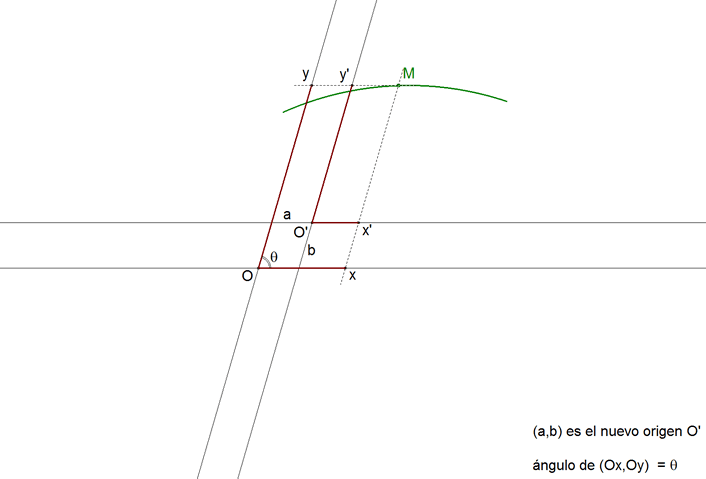 figura 2 Los nuevos ejes son paralelos a los antiguos con (a,b) coordenadas del nuevo origen respecto al sistema de referencia inicial. 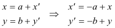 1.3.2. CASO 2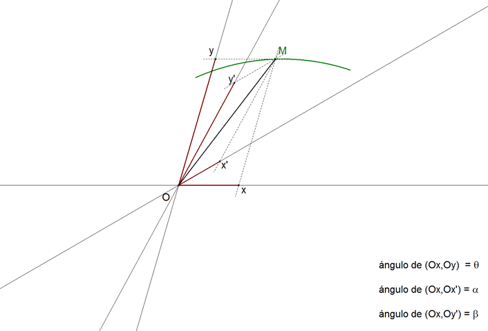 figura 3 Los nuevos ejes son dos rectas cualesquiera. En este caso hay que elegir convenientemente los ángulos que se van a usar (ver figura 3), definimos los nuevos ejes por los ángulos que forman con el eje Ox. También, en este caso, es conveniente, en lugar de trabajar directamente con abscisas y ordenadas, hacerlo considerándolas como proyecciones del segmento OM. Proyectamos los contornos OxMO y Ox'MO sobre los ejes Ox y Oy e igualando las proyecciones de OM obtenemos: 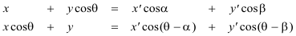 De aquí despejamos: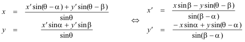 1.3.3 CASO 3 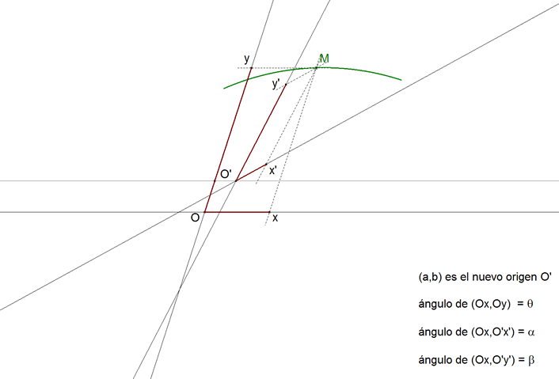 figura 4 CASO GENERAL: El origen es cualquiera y los ejes son rectas cualesquiera. Este caso puede considerarse como combinación del segundo y del primero. Luego, una vez obtenidas las fórmulas de cambio de ejes, aplicamos las de cambio de origen y obtenemos las relaciones siguientes:
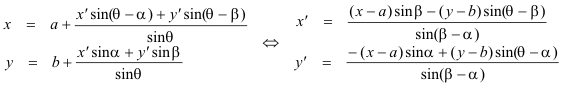 CARNOT destaca aquí que todos los términos que aquí aparecen NO son de grado superior alprimero. En su notación, escribe: 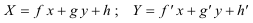 Lo que nos lleva a deducir queUna curva algebraica de grado m seguirá siendo de grado m después de un cambio de esta naturaleza. 1.3.4 NOTA: Si los nuevos ejes son rectangulares podemos aprovechar el caso 3: Aquí
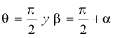 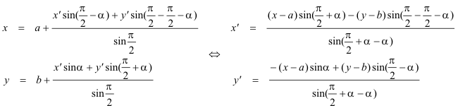 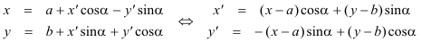 |
| 1.4 Nº 374 RAZÓN ENTRE EL PRODUCTO DE ABSCISAS Y EL PRODUCTO DE ORDENADAS EN EL ORIGEN PARA LA ECUACIÓN DE GRADO m |
Una ecuación de grado m en las coordenadas x e y se puede escribir como
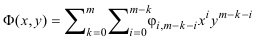 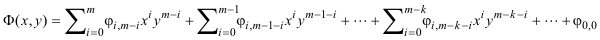 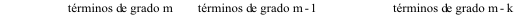 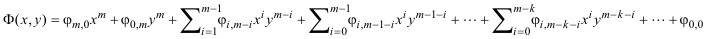 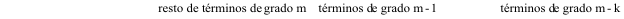 ¿Cómo queda esta expresión para x=0? 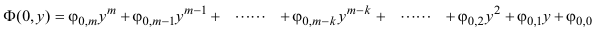 Nos queda un polinomio de grado m en y; pero si aplicamos la teoría general de polinomios de una variable, el valor absoluto del producto de todas las raíces de y, es decir de todas las ordenadas que corresponden a x=0 (origen de coordenadas), se puede escribir como 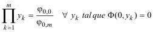 Mediante un razonamiento semejante para y=0 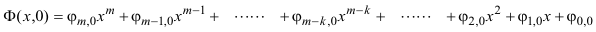 Para el mismo origen de coordenadas, el valor absoluto del producto de todas las abscisas que responden a y=0 es 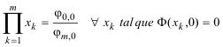 De donde podemos deducir el valor de la razón entre el producto de ordenadas y el producto de abscisas en el origen 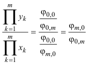 |
| 1.5 Nº 375 EFECTO DE LA TRASLACIÓN DEL ORIGEN DE COORDENADAS EN LA EXPRESIÓN ANTERIOR |
1.5.1 El traslado del origen equivale a establecer unos nuevos ejes paralelos a los ejes antiguos 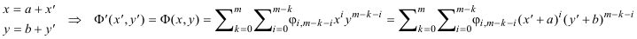 Introducimos la fórmula para las potencias de un binomio 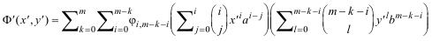 Desarrollamos y vemos que el coeficiente de x'm coincide con el de xm y el coeficiente de y'm coincide con el de ym
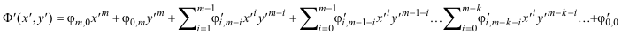 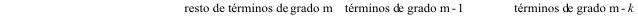 En este caso, si hacemos respectivamente x'=0 e y'=0 y comparamos con el nº 374, obtenemos 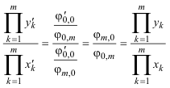 El desplazamiento de los ejes, paralelamente a los ejes iniciales, no modifica el valor de la razón entre el producto de ordenadas y el producto de abscisas en el nuevo origen. 1.5.2 COMPROBACIÓN CON CABRI II PLUS 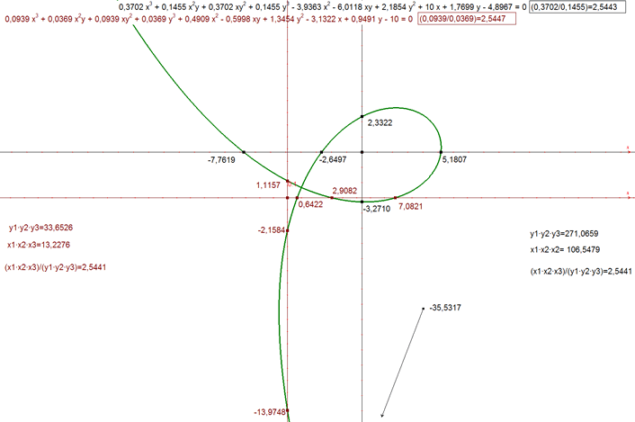 figura 5 Comprobación con CABRI II PLUS de los números 374 y 375. (las pequeñas diferencia son de redondeo en el software). |
| 1.6 Nº 376 TEOREMA |
1.6.1 ENUNCIADO Y DEMOSTRACIÓN En toda curva geométrica, la razón entre los productos de abscisas naturales es la misma que entre los productos de ordenadas. Para demostrarlo basta aprovechar el resultado del nº 375 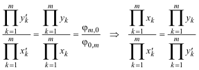 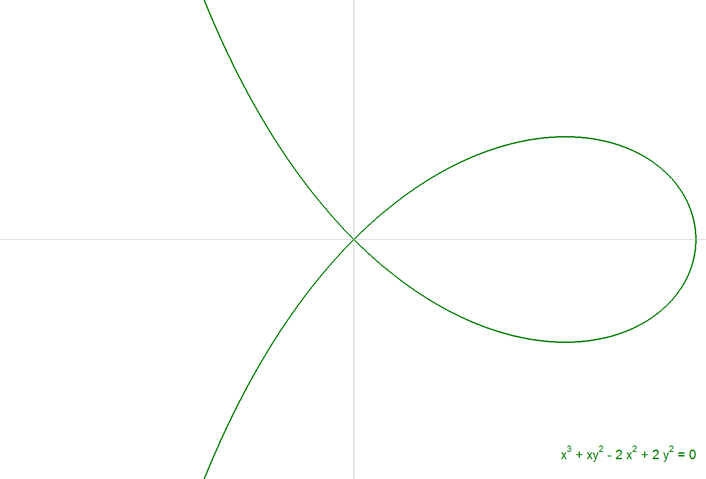 figura 6 Para fijar ideas vamos a hacer una comprobación con CABRI II PLUS. Para ello usamos, por ejemplo, la curva de la figura 6. 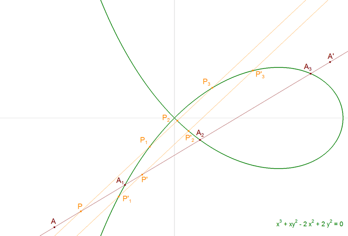 figura 7 Sea una recta cualquiera AA' el eje de abscisas. Corta a la curva en A1, A2, A3 (hasta Am si la curva es de grado m). Tomemos un punto cualquiera P sobre la recta AA'. Por P trazamos una recta cualquiera p que corta a la curva en P1, P2, P3. Llamaremos abscisas naturales del punto P a los segmentos interceptados en AA' (con su signo) 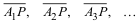 Las ordenadas sobre p correspondientes a P son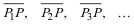 Tomemos otro punto cualquiera P' sobre la recta AA'. Por P' trazamos una recta p' paralela a p que corta a la curva en P'1, P'2, P'3. Llamaremos abscisas naturales del punto P' a los segmentos interceptados en AA' 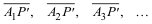 Las ordenadas sobre p correspondientes a P' son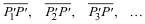 A partir de aquí y por facilidad de escritura suprimiremos los segmentos pequeños sobre las letras que definen los segmentos; pero no olvidemos que son segmentos algebraicos con su signo correspondiente. 1.6.2 COMPROBACIÓN CON CABRI II PLUS Basta identificar: 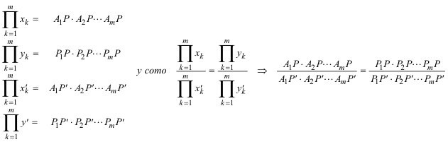 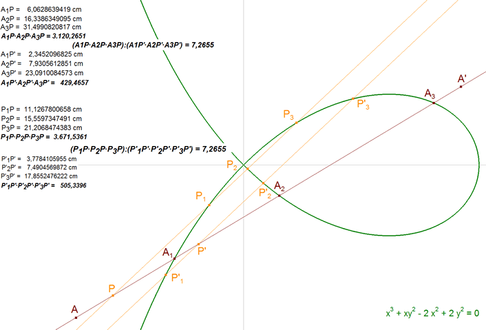 figura 8 Haciendo los cálculos y mediciones con CABRI II PLUS, vemos que se cumple el resultado enunciado. |
| 1.7 Nº 377 AMPLIACIÓN, POR EL MISMO RAZONAMIENTO, DEL RESULTADO ANTERIOR A UNA SUPERFICIE CURVA |
Si en una superficie curva geométrica cualquiera, se toman a voluntad, en el espacio, dos puntos A, B; y se trazan por estos puntos sendas transversales paralelas entre sí; y otras dos transversales también paralelas entre sí y distintas de las primeras: la razón de los productos de los segmentos respectivamente interceptados entre los puntos A, B, por la superficie curva sobre las dos primeras transversales. |
|
1.8 Nº 378 EL TEOREMA DE CARNOT PARA EL TRIÁNGULO Y UNA CURVA ALGEBRAICA DE GRADO m CARNOT enuncia su TEOREMA en el nº 379 como TEOREMA XXXVIII y éste que nos ocupa es para CARNOT un paso previo. |
1.8.1 ENUNCIADO Y DEMOSTRACIÓN Sea una curva geométrica plana cualquiera. Tomemos sobre el plano de la curva tres puntos A, B, C, y tracemos las rectas AB, BC y CA. Notemos por (A'B') el producto de los segmentos interceptados sobre AB entre A y las diferentes ramas de la curva, por (B'A') el de los segmentos interceptados sobre BA entre B y las diferentes ramas de la curva. Análogamente (A'C'), (C'A') sobre AC y (B'C'), (C'B') sobre BC. Entonces: 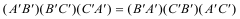 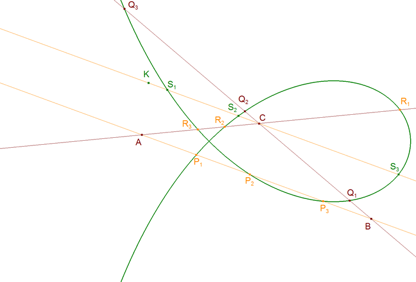 figura 9 Observando la figura tenemos los siguientes productos: 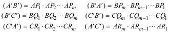 Si trazamos una paralela CK a AB podemos escribir dos productos más: 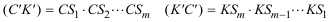 Tomando la recta BC como eje de abscisas, sea BA una recta por B y sea CK una paralela a BA por C; aplicando el nº 376: 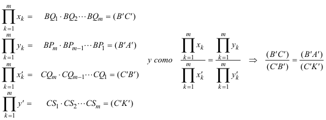 Tomando la recta CA como eje de abscisas, sea AB una recta por A y sea CK una paralela a AB por C; aplicando el nº 376: 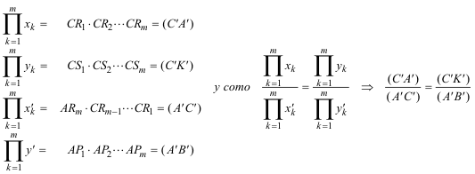 Y multiplicando miembro a miembro las dos igualdades anteriores se elimina (C'K') del numerador y del denominador: 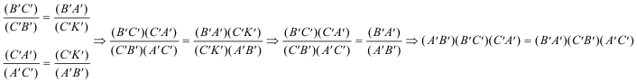 que es lo que queríamos demostrar. 1.8.2 COMPROBACIÓN CON CABRI II PLUS 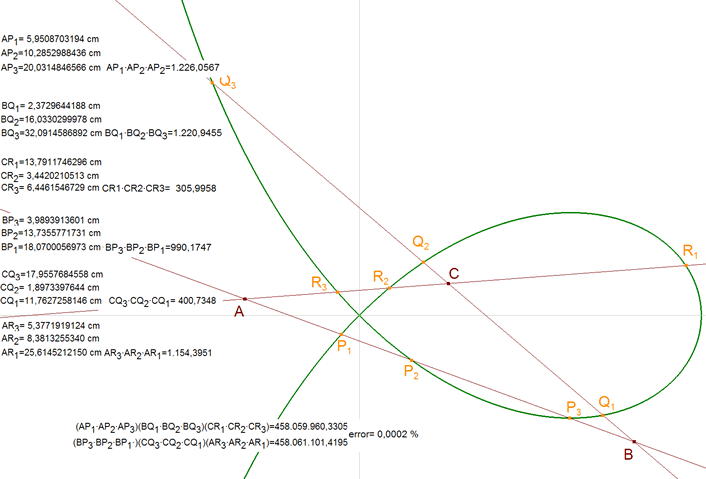 figura 10 Los cálculos y mediciones con CABRI II PLUS, confirman el resultado. |
|
1.9 TEOREMA XXXVIII Nº 379 EL TEOREMA DE CARNOT PARA UN POLÍGONO DE N LADOS Y UNA CURVA ALGEBRAICA DE GRADO m |
Basta descomponer en triángulos el polígono dado y aplicando a cada triángulo el resultado y la notación del nº 378 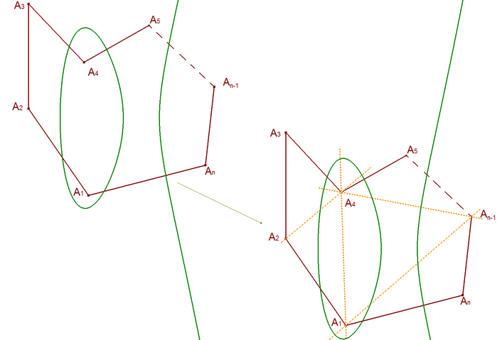 figura 11 Recorriendo los triángulos formados, en sentido horario, podemos escribir 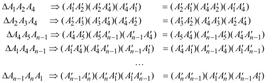 Los segmentos interiores aparecen en dos triángulos (recorridos en sentidos distintos) y por tanto los productos de esos segmentos aparecen dos veces (una en cada miembro de la igualdad); entonces si multiplicamos todas estas ecuaciones miembro a miembro, se eliminan entre sí todos los productos de los segmentos interiores y queda el resultado que queremos establecer: 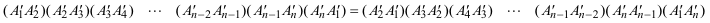 |
|
1.10 TEOREMA XXXIX Nº 380 EL TEOREMA DE CARNOT PARA UN POLÍGONO PLANO O ALABEADO DE N LADOS Y UNA SUPERFICIE ALGEBRAICA. |
Si dada una curva geométrica cualquiera, se describe en el espacio un polígono cualquiera plano o alabeado ABCDE del que se prolongan indefinidamente sus lados, se designa por (A'.B'), (B',A'), los productos de los segmentos interceptados sobre ab, entre cada uno de los puntos A, respectivamente B, y las diferentes regiones de la superficie curva, por (B',C'), (C',B') los productos... se cumplirá: 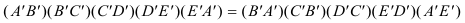 |
| 1.11 Nº 381 EL TEOREMA DE CARNOT CUANDO ALGUNO DE LOS N LADOS DEL POLÍGONO ES TANGENTE A LA CURVA. |
Lo que nos dice CARNOT es que en el caso de que uno de los lados (o más) sea tangente a la curva, en el producto de segmentos aparecerá un cuadrado. Por ejemplo, sean las intersecciones del lado i-ésimo del polígono y la curva Φ algebraica de grado m 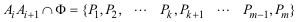 Si el lado es tangente, habrá un punto doble, por ejemplo 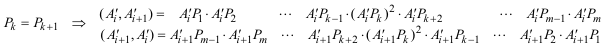 El caso m=2 (cónica) presenta un bello resultado como veremos en 3.3? |
| 2. EL TEOREMA DE CARNOT CUANDO LA CURVA ALGEBRAICA ES UNA CÓNICA (m=2) |
| 2.1 TEOREMA DE CARNOT PARA EL TRIÁNGULO Y UNA CÓNICA. |
ENUNCIADO DEL TEOREMA DE CARNOT Sea en el plano un triángulo cualquiera ABC. Sean los puntos
Entonces los seis puntos A1, A2, B1, B2, C1 y C2 están sobre una cónica Γ si y sólo si Observamos que se añade aquí, el teorema recíproco que CARNOT no trata. 2.1.1 DEMOSTRACION DEL TEOREMA DIRECTO Teniendo en cuenta que la cónica Γ es una curva algebraica de grado m=2, y el triángulo ABC un polígono de lados n=3, nos apoyamos en el TEOREMA XXXVIII de CARNOT? (en 2.1.3? veremos una demostración proyectiva) pero siendo y nos queda donde dividiendo el primer miembro por el segundo obtenemos el resultado a demostrar. 2.1.2 DEMOSTRACION DEL TEOREMA RECÍPROCO Para empezar, admitimos, sin demostración, que por cinco puntos distintos pasa siempre una cónica y sólo una. Sea un triángulo ABC y seis puntos distintos A1, A2, B1, B2, C1, C2 tales que:
Sea Γ la cónica que pasa por A1, A2, B1, B2, C1. Supongamos ahora que la otra intersección de la cónica con AB es por el TEOREMA DIRECTO DE CARNOT se cumple que de donde igualando las dos ecuaciones, obtenemos que que se traduce en la razón doble de cuatro puntos sólo puede ser la unidad si su primer par de puntos (A,B) o su segundo par de puntos (C2,C*) coinciden; pero A y B son distintos, entonces y por lo tanto C2 también está sobre la cónica Γ, como queríamos demostrar. 2.1.3 EL MUNDO PROYECTIVO La demostración del teorema directo ha seguido el hilo de las ideas que CARNOT establece en su obra. En el recíproco hemos usado la razón doble que, aunque es una relación de razones métricas, es el invariante proyectivo por excelencia de cuatro puntos alineados en el espacio proyectivo. Debo señalar, como me indica FRANÇOIS RIDEAU, el enfoque completo a través de la razón doble que ofrece CHARLES MICHEL en el capítulo VI de sus COMPLÉMENTS DE GÉOMÉTRIE MODERNE, LIBRAIRIE VUIBERT, PARIS 1926?; ésta es la misma que presenta M. CHASLES? en su TRAITÉ DES SECTIONS CONIQUES? habiendo traducido los productos de razones simples en productos de razones dobles: 2.1.3.1 TEOREMA PREVIO Sea un triángulo ABC. Sean dos rectas cualesquiera d1 y d2 y sean los puntos tenemos entonces En efecto, conservando la notación, si proyectamos la figura de forma que d2 se transforme en la recta de infinito nos queda que es el TEOREMA DE MENELAO (ver 2.3.1)?. 2.1.3.2 TEOREMA DE CARNOT Sean un triángulo ABC, una recta d y una cónica Γ y sean los puntos donde la recta y la cónica encuentran al triángulo, tenemos entonces En efecto, sean los puntos aplicando el TEOREMA PREVIO? y como el cuadrilátero A1B1A2B2 está inscrito a la cónica, aplicaremos el TEOREMA DE DESARGUES?, que indica que los pares (A,B), (C1,C2), (M1,M2) son homólogos en una misma involución que con razones dobles se expresa como sigue multiplicando las tres últimas igualdades, miembro a miembro, obtenemos la relación a demostrar. 2.1.4 NOTAS 2.1.4.1 Creo que debemos señalar la ingeniosa introducción de la recta transversal auxiliar d. 2.1.4.2 En cuanto la expresión en razones dobles, podríamos haber descompuesto el producto de esas razones en razones simples, que nos lleva a aplicamos el TEOREMA DE MENELAO? al último cuadrado y obtenemos la relación de 2.1.1? Veremos en 2.2.1? que el manejo de razones dobles, facilita enormemente la dualización de este teorema. |
| 2.2 DUAL DEL TEOREMA DE CARNOT PARA EL TRIÁNGULO Y UNA CÓNICA |
|
2.2.1 DUALIZACIÓN DEL TEOREMA DE CARNOT (FRANÇOIS RIDEAU) Reproduzco la realización de FRANÇOIS RIDEAU, MAÎTRE DE CONFÉRENCES À L'UNIVERSITÉ DE PARIS 7. Estas notas son un ejemplo magnífico de como dualizar una proposición y por lo tanto hay que guardarlas en lugar privilegiado. Agradezco a FRANÇOIS RIDEAU su pronta y desinteresada ayuda. Gracias al amigo y sobre todo al maestro. El primer paso consiste en tomar el enunciado directo (en producto de razones simples) y traducirlo a un producto de razones dobles. Este paso ha quedado despejado en el punto 2.1.3. Ahora podemos seguir la dualización del modo habitual: A todo punto, nombrado con una letra mayúscula, se le asocia una recta, nombrada con una letra minúscula y recíprocamente. A puntos alineados, corresponden rectas concurrentes y recíprocamente. A la razón doble de cuatro puntos alineados corresponde una razón doble igual de cuatro rectas concurrentes. Y dar el siguiente ENUNCIADO del DUAL DEL TEOREMA DE CARNOT Sean a, b, c tres rectas del plano no concurrentes, un punto D y sean las rectas Entonces las rectas a1, a2, b1, b2, c1, c2 son tangentes a una misma cónica si y sólo si DEMOSTRACIÓN Aplicando el PRINCIPIO DE DUALIDAD? que nos asegura que probado un teorema, queda probado su dual. 2.2.2 EXPRESIÓN TRIGONOMÉTRICA DEL TEOREMA DUAL De acuerdo con el estilo de CARNOT enunciamos aquí la relación trigonométrica equivalente a este teorema. Sea un triángulo ABC en el plano de una cónica Γ, si por cada uno de sus vértices se trazan tangentes a la curva, entre los senos de los ángulos que forman las tangentes con los lados, se tendrá la relación siguiente: siendo y DEMOSTRACIÓN Basta traducir las razón doble de cuatro rectas en función de los senos que forman entre ellas y obtenemos la relación del enunciado. |
| 2.3 EL TEOREMA DE MENELAO COMO CONSECUENCIA DEL TEOREMA DE CARNOT |
Supongamos que la cónica es degenerada formada por un par de rectas una de las cuales es la recta de infinito; entonces C2, A2 y B2 son respectivamente los puntos de infinito de los lados AB, BC y CA lo que significa que En esta situación, la expresión del TEOREMA DE CARNOT queda como sigue y por lo tanto podemos enunciar el 2.3.1 TEOREMA DE MENELAO (ver 2.1.3.1)? Sea en el plano un triángulo cualquiera ABC. Sean los puntos Los tres puntos A1, B1, y C1 están sobre una recta r si y sólo si 2.3.2 NOTAS 2.3.2.1 Si en lugar de considerar las rectas como casos particulares de la cónica, consideramos a la recta como una curva algebraica de grado m=1, podemos aplicar directamente el TEOREMA XXXVIII DE CARNOT? y obtenemos el resultado de MENELAO. 2.3.2.2 Si tres de los seis puntos están alineados y los seis puntos cumplen la relación de Carnot, entonces, los otros tres también están alineados, se tiene pues una conica impropia formada por dos rectas, secantes o paralelas (ver 5.3)?. Ver también el TEOREMA PREVIO en 2.1.3.1? |
| 2.4 EL TEOREMA DE CEVA COMO CONSECUENCIA DEL DUAL DEL TEOREMA DE CARNOT |
Supongamos que la cónica es degenerada formada por un punto (también podemos suponer que la cónica se "encoge" lo suficiente hasta confundirse con un punto); entonces las tangentes desde los vértices se superponen lo que significa que En esta situación, la expresión trigonométrica del DUAL DEL TEOREMA DE CARNOT? queda como sigue pero aplicando el TEOREMA DE LOS SENOS? convenientemente, tenemos y de aquí que sustituyendo en la fórmula inicial queda pero si el resultado fuera +1, por el TEOREMA DE MENELAO?, A1, B1 y C1 estarían alineados, que no es el caso, ello implica que el resultado debe ser -1. Si el punto al que se reduce la cónica fuera un punto de infinito, a1, b1, c1 serían paralelas; podemos pues enunciar el 2.4.1 TEOREMA DE CEVA Sea en el plano un triángulo cualquiera ABC. Sea un punto C1 sobre el lado AB. Sea un puntos A1 sobre el lado BC. Sea un punto B1 sobre el lado CA. Las tres rectas AA1, BB1, y CC1, llamadas cevianas, son paralelas o concurrentes en un punto P si y sólo si 2.4.1.1 Si usamos razones dobles, partiendo de 2.2.1? nos queda 2.4.2 NOTAS 2.4.2.1 LAS MEDIANAS SON CONCURRENTES. Con el resultado anterior, no resulta complicado probar que con lo que obtenemos la condición de concurrencia 2.4.2.2 LAS BISECTRICES SON CONCURRENTES. La relación de Ceva puede expresarse en función de los ángulos que las cevianas forman con los lados sin más que sustituir en la fórmula inicial (Recordemos que los ángulos son orientados y por tanto con su signo correspondiente). Para las bisectrices que nos da la relación de concurrencia 2.4.2.3 LAS ALTURAS SON CONCURRENTES con lo que obtenemos la condición de concurrencia |
| 2.5 EL TEOREMA DE PASCAL COMO CONSECUENCIA DEL TEOREMA DE CARNOT |
2.5.1 ENUNCIADO Los lados opuestos de un hexágono inscrito en una cónica se encuentran en tres puntos alineados.
2.5.2 DEMOSTRACIÓN Sea el hexágonoinscrito en la cónica Γ cuyos seis vértices consecutivos son A1A2B1B2C1C2, y sean los puntos Consideremos ahora el triángulo ABC ¡¡¡ Introducimos ahora una transversal auxiliar d que define los siguientes puntos !!! Aplicando el TEOREMA DE CARNOT, expresado como producto de razones dobles?, al triángulo ABC y a la cónica Γ, tenemos Consideramos ahora B2C1, C2A1 y A2B1 como transversales del triángulo ABC y aplicamos el TEOREMA DE MENELAO, expresado como producto de razones dobles? Multiplicando miembro a miembro estas tres últimas ecuaciones tenemos e introduciendo la relación de CARNOT vista más arriba Lo que prueba (MENELAO)? que A3, B3, C3 están alineados. |
| 2.6 EL TEOREMA DE BRIANCHON COMO CONSECUENCIA DEL DUAL DEL TEOREMA DE CARNOT |
2.6.1 ENUNCIADO Las tres rectas que unen los vértices de un hexágonocircunscrito a una cónica son concurrentes.
2.6.2 DEMOSTRACIÓN Sea el hexágonocircunscrito a la cónica Γ cuyos seis lados consecutivos son a1a2b1b2c1c2, y sean las rectas Consideremos ahora el triángulo de lados abc ¡¡¡ Introducimos ahora un punto auxiliar D que define las siguientes rectas !!! Aplicando el TEOREMA DUAL DE CARNOT? al triángulo de lados abc y a la cónica Γ, tenemos Consideramos ahora los puntos b2∩c1, c2∩a1 y a2∩b1 y el triángulo de lados abc y aplicamos el TEOREMA DE CEVA? Multiplicando miembro a miembro estas tres últimas ecuaciones tenemos e introduciendo la relación del dual de CARNOT vista más arriba? Lo que prueba (CEVA)? que a3, b3, c3 son concurrentes. |
| 3. APLICACIONES DEL TEOREMA DE CARNOT PARA EL TRIÁNGULO Y UNA CÓNICA |
| 3.1 DOS SISTEMAS DE CEVIANAS |
Sea un triángulo ABC y un sistema de cevianas concurrentes en un punto P1 (ver figura), por el TEOREMA DE CEVA?
y sea ahora otro sistema de cevianas concurrentes en un punto P2 multiplicando miembro a miembro las dos condiciones de concurrencia tenemos y por lo tanto, gracias al TEOREMA DE CARNOT?, podemos enunciar el siguiente 3.1.1 TEOREMA PARA DOS SISTEMAS DE CEVIANAS Las rectas que unen los vértices de un triángulo con dos puntos dados cortan los lados opuestos a los vértices en seis puntos que están sobre una misma cónica Γ. 3.1.1.1 También podíamos suponer que la cónica se "aplasta" lo suficiente hasta convertirse en un segmento limitado por dos puntos. Entonces el DUAL DEL TEOREMA DE CARNOT? nos asegura el mismo resultado ya que las seis tangentes desde los vértices irían tres a uno de los puntos y tres al otro.
3.1.2 Si P1 es el baricentro G y A1, B1, C1 los puntos medios de los lados, obtendríamos la CÓNICA DE NUEVE PUNTOS.
3.1.3 Si, además, P2 es el ortocentro, la cónica no es otra que el CÍRCULO DE NUEVE PUNTOS (de Feuerbach o de Euler). Y también
3.1.4 TEOREMA PARA CEVIANAS PARALELAS Dado un triángulo ABC, si trazamos dos rectas cualesquiera por un vértice y luego, por cada vértice, paralelas a las rectas trazadas, las seis rectas cortarán a los lados opuestos a los vértices en seis puntos que están sobre una misma cónica Γ. (Las rectas paralelas concurren en su punto de infinito) |
| 3.2 CASO DE PUNTOS SIMÉTRICOS |
¿Qué ocurre cuando tenemos en cada lado un punto y su simétrico respecto al punto medio de ese lado? Consideremos tres puntos cualesquiera Sean los puntos medios de los lados Sean los simétricos respecto los puntos medios En este caso, usando las igualdades anteriores, tenemos: y de aquí recordando la notación de CARNOT lo que nos lleva a por lo que podemos enunciar 3.2.1 TEOREMA PARA UN SISTEMA DE PUNTOS SIMÉTRICOS Dado un triángulo ABC. Sean tres puntos, distintos de los vértices, A1 sobre BC, B1 sobre CA, y C1 sobre AB. Sean A2, B2, C2 los simétricos de A1, B1 y C1 respecto a los respectivos puntos medios de los lados del triángulo. Entonces los seis puntos A1, A2, B1, B2, C1, C2, están sobre una misma cónica.
del mismo modo, podemos enunciar 3.2.2 TEOREMA PARA DOS SISTEMAS DE CEVIANAS POR PUNTOS SIMÉTRICOS Dado un triángulo ABC y tres puntos A1 sobre BC, B1 sobre CA, y C1 sobre AB. Si AA1, BB1 y CC1 son tres cevianas concurrentes en P1, y sean A2, B2, C2 los simétricos de A1, B1 y C1 respecto a los respectivos puntos medios de los lados del triángulo. Entonces AA2, BB2 y CC2.son concurrentes o paralelas. Si introducimos en la expresión de CARNOT que AA1, BB1 y CC1 son concurrentes, nos queda que nos lleva a y por tanto AA2, BB2 y CC2 son concurrentes o paralelas. 3.2.3 NOTA 3.2.3.1 AA2, BB2 y CC2 reciben el nombre de CEVIANAS ISOTÓMICAS de AA1, BB1 y CC1 y P2 es el PUNTO ISOTÓMICO de P1. 3.2.4 LOS PUNTOS DE CONTACTO DEL CÍRCULO INSCRITO Y DE LOS CÍRCULOS EX-INSCRITOS
Sean los siguientes puntos de contacto (ver figura 23) Es un buen ejercicio comprobar que y que por lo tanto, aplicando 3.2.1? podemos decir que (ver figura 24) 3.2.4.1 TEOREMA PARA LOS PUNTOS DE CONTACTO DEL CÍRCULO INSCRITO Y EL EX-INSCRITO Los puntos de contacto, sobre el mismo lado de un triángulo, del círculo inscrito ΓI y del círculo ex-inscrito correspondiente son simétricos respecto al punto medio de ese lado del triángulo y por tanto los seis puntos A1, A2, B1, B2, C1, C2, están sobre una misma cónica Γ. 3.2.4.2 TEOREMA PARA LOS PUNTOS DE CONTACTO DE LOS OTROS CÍRCULOS EX-INSCRITOS Los puntos de contacto, sobre el mismo lado de un triángulo, de los otros dos círculos ex-inscritos son también simétricos respecto al punto medio de ese lado del triángulo y por tanto los seis puntos A'1, A'2, B'1, B'2, C'1, C'2, están sobre una misma cónica Γ'. |
| 3.3 EL TEOREMA DE CARNOT CUANDO ALGUNO DE LOS LADOS DEL TRIÁNGULO ES TANGENTE A LA CURVA |
Retomamos ahora el punto 1.11? particularizado a la cónica y al triángulo.
3.3.1 UN LADO TANGENTE ¿Qué ocurre cuando tenemos algún lado tangente a la curva? Los dos puntos de intersección del lado con la cónica se convierten en un punto doble. Entonces, para un lado tangente a la cónica, podemos concluir una solución al siguiente problema: Hacer pasar una cónica por cuatro puntos y tangente a una recta dada. Sean A1, A2, B1, B2 los cuatro puntos y r≡AB la recta dada. Las rectas r, A1A2, B1B2 forman el triángulo ABC (figura 25); con lo que llamando C'=C1=C2 al punto de contacto de la cónica buscada con AB y recurriendo a la relación de CARNOT despejando y extrayendo la raíz cuadrada
Si C" es la otra solución tendremos
3.3.1.1 TEOREMA SOBRE LOS PUNTOS DE CONTACTO Los puntos de contacto de una cónica por cuatro puntos A1, A2, B1, B2 y tangente a una recta dada r dividen armónicamente a los puntos AB. 3.3.2 TRES LADOS TANGENTES ¿Qué ocurre cuando los tres lados son tangentes a la curva? Los seis puntos de intersección de los lados con la cónica se convierten en tres puntos dobles. En esta situación la cónica queda inscrita en el triángulo
y la relación de CARNOT queda como Sacando la raíz cuadrada El resultado debe ser -1. No puede ser +1 porque los puntos de contacto no pueden estar alineados (MENELAO)?. Este resultado nos permite enunciar (CEVA)? el siguiente teorema
Sea una cónica Γ inscrita en un triángulo ABC. Las rectas trazadas desde el vértice al punto de contacto del lado opuesto son concurrentes. 3.3.3 NOTAS CARNOT también incluye este resultado en el nº 383 como corolario del nº 381 (TEOREMA XL)?. 3.3.3.1 Si Γ es el círculo inscrito al triángulo ABC, P recibe el nombre de PUNTO DE GERGONNE. 3.3.3.2 Como los puntos de contacto de los círculos ex-inscritos, ver 3.2.4?, A2, B2 y C2 son los simétricos, respecto al punto medio del lado correspondiente, de los puntos de contacto del círculo inscrito A1, B1 y C1; aplicando 3.2.1 tenemos que AA2, BB2 y CC2 son cevianas concurrentes en un punto N. N es el PUNTO ISOTÓMICO DEL PUNTO DE GERGONNE y recibe el nombre de PUNTO DE NAGEL. 3.3.3.3 Si construimos el triángulo A'B'C' para el que el círculo circunscrito a ABC es su círculo inscrito, tangente en A, B y C; el PUNTO DE GERGONNE del triángulo A'B'C' se llama PUNTO DE LEMOINE del triángulo ABC. |
| 3.4 EL TEOREMA DE CARNOT CUANDO ALGUNO DE LOS VÉRTICES DEL TRIÁNGULO ESTÁN EN LA CURVA |
3.4.1 UN VÉRTICE SOBRE LA CÓNICA Supongamos, para fijar ideas, que C es el vértice sobre la cónica Γ. Estudiemos a continuación el comportamiento de la cuerda A2B1. Para esta cuerda siendo α y β los ángulos de la cuerda con CA y CB respectivamente. A medida que la cónica se aproxima a C, dejando los otros puntos fijos los tres puntos se confunden y la cuerda se convierte en la tangente por C a la cónica y entonces α, β se transforman en los ángulos que la tangente por C a la cónica forma con los lados CA y CB con lo que nos queda que entrando en la ecuación de CARNOT de donde despejando, obtenemos la razón de senos que nos da a conocer la dirección de la tangente en C y por eso este resultado nos permite: Trazar la tangente en un punto de una cónica de la que se conocen cuatro puntos. 3.4.2 CÍRCULO OSCULADOR EN UN PUNTO DE UNA CÓNICA Como un corolario más del TEOREMA DE CARNOT? podemos: Construir el círculo osculador por un punto de una cónica de la que se conocen la tangente en dicho punto y tres puntos más.
Sean tres puntos consecutivos sobre la cónica B1, C2, B2 y otros tres puntos cualesquiera A1, A2, C1. El triángulo ABC nos permite escribir
Consideremos ahora el círculo definido por los tres puntos B1, C2, B2 y sea P el punto donde dicho círculo corta a AB. Se tiene entonces: y tomando la relación anterior de CARNOT? tenemos Esta relación es satisfecha para cualquier círculo por tres puntos consecutivos de la cónica.
Supongamos ahora que el vértice A se desplaza hasta estar en la cónica, entonces y el círculo mencionado sería el círculo osculador. La relación anterior quedaría como Como el segundo miembro de esta ecuación es todo conocido, podemos determinar el punto P que es suficiente para determinar el círculo osculador que es tangente en A.
Supongamos ahora que el C es un punto de infinito, entonces la transversal a la cónica por B será paralela a la tangente por A. Todo ello implica que y en este caso la ecuación de AP se modifica como
Supongamos ahora que B, intersección de las cuerdas A1A2 y AC1, es el punto medio de ambas y en este caso la nueva expresión de AP es
Sea R el radio del círculo osculador y sea AD el diámetro perpendicular a la tangente a la cónica en A, tenemos substituimos ahora AP por su expresión y despejamos R O también donde BQ es la perpendicular por B a la tangente en A. |
| 3.5 EL TEOREMA DE CARNOT CUANDO ALGUNO DE LOS VÉRTICES DEL TRIÁNGULO ES UN PUNTO DE INFINITO |
3.5.1 TEOREMA DE NEWTON Si por un punto cualquiera Q del plano de una cónica se trazan dos rectas paralelas a dos direcciones fijas, la razón de los productos de los segmentos que la curva determina sobre esas rectas a partir de su punto común, es constante. Sea por ejemplo A el punto de infinito, tenemos que introducido en CARNOT Si trazamos ahora una paralela cualquiera a BC que corta a CB1B2 en Q y a la cónica Γ en P1 y P2. Podemos aplicar ahora el TEOREMA DE CARNOT? al triángulo de vértices C, Q y el punto de infinito P1P2 ∩ BC; y escribimos igualando las dos últimas ecuaciones Son multitud los corolarios que se desprenden de este teorema. Veamos dos ejemplos a continuación.
3.5.2 PRIMER COROLARIO DEL TEOREMA DE NEWTON Si por cada punto B de una recta BC, paralela a la asíntota de una hipérbola, trazamos una paralela a una dirección fija que corta a la curva en C1, C2 mientras que A1 es el punto donde BC corta a la hipérbola Γ, se tiene la siguiente relación Además de suponer en 3.5.1? que A es el punto de infinito, supongamos también que uno de los dos puntos A1, A2, o ambos, es el punto de infinito de la recta BC, entonces P2 también es el punto de infinito de BC lo que nos permite establecer el corolario enunciado.
3.5.3 SEGUNDO COROLARIO DEL TEOREMA DE NEWTON Si por cada punto B' de la asíntota de una hipérbola, trazamos una paralela a una dirección fija que corta a la curvaen C1, C2; entonces Basta sustituir la recta BC por la asíntota en la ecuación de 3.5.1? pero en este caso A'1, A'2 son el punto de infinito de la asíntota y así |
| 3.6 NUEVAS FORMAS DEL TEOREMA QUE FACILITAN LA OBTENCIÓN DE NUEVOS COROLARIOS |
3.6.1 NUEVO ENUNCIADO DEL TEOREMA DE CARNOT Si por dos puntos fijos A y B se trazan sendas rectas que concurren en un punto C y cortan respectivamente a la cónica Γ en los puntos se tiene la siguiente relación DEMOSTRACION Para ver que la constante es Basta aplicar el TEOREMA DE CARNOT? a ABC y a ABC'
3.6.2 SI EL PUNTO B ES UN PUNTO DE INFINITO basta ir a las ecuaciones de la demostración anterior y escribir Pero en este caso al ser B un punto de infinito y sustituyendo en la igualdad anterior nos queda el resultado que queríamos demostrar. |
| 4. APLICACIONES DEL TEOREMA DUAL DE CARNOT PARA EL TRIÁNGULO Y UNA CÓNICA |
| 4.1 VÉRTICE SOBRE LA CÓNICA |
Cuando el vértice A está sobre la cónica, las dos tangentes a1, a2, coinciden con la tangente a la cónica en el punto A y la relación trigonométrica del DUAL DEL TEOREMA DE CARNOT? queda como y de aquí lo que nos permite conocer la razón de senos de los ángulos de la tangente en el punto A y los lados que pasan por ese vértice A. Esta razón nos determina la dirección de la tangente y permite resolver el siguiente problema Conocidas cuatro tangentes y un punto de una cónica, determinar la tangente a la cónica en este punto. Al extraer la raíz cuadrada, vemos que existen dos valores para la razón de senos que nos proporcionan las dos soluciones que existen. |
| 4.2 CUANDO UN LADO ES TANGENTE A LA CÓNICA |
¿Qué pasa cuando, por ejemplo, CA es tangente a la cónica? Sea I el punto de intersección de las tangentes (ver figura 41 (a)) tenemos entonces la relación que introduciéndola en la expresión trigonométrica del DUAL DEL TEOREMA DE CARNOT? nos queda y despejando Cuando el lado es tangente a la cónica, I es el punto de contacto y como todos los componentes del primer miembro de la igualdad anterior son conocidos podemos resolver el problema siguiente Dadas cinco tangentes a una cónica, determinar el punto de contacto de cada una de ellas. |
| 4.3 CUANDO ALGUNO DE LOS VÉRTICES ES UN PUNTO DE INFINITO |
4.3.1 UN VÉRTICE ES UN PUNTO DE INFINITO Supongamos, por ejemplo, que el vértice A es un punto de infinito. En estas condiciones las tangentes por ese vértice son paralelas a los lados paralelos por B y C y cortan al lado BC en los siguientes puntos En esta situación la relación trigonométrica del DUAL DEL TEOREMA DE CARNOT? queda como
4.3.2 DOS VÉRTICES SON PUNTOS DE INFINITO (UN LADO ES LA RECTA DE INFINITO) Supongamos, por ejemplo, que además de A el vértice B es un punto de infinito. En estas condiciones las tangentes por esos dos vértices son paralelas a los lados por C y cortan a esos lados en los siguientes puntos En esta situación la expresión trigonométrica del DUAL DEL TEOREMA DE CARNOT? queda como pero al ser AB la recta de infinito y sustituyendo |
| 5. APLICACIÓN SIMULTÁNEA DEL TEOREMA DE CARNOT Y SU TEOREMA DUAL PARA UN NUEVO TEOREMA DEL TRIÁNGULO Y UNA CÓNICA |
Al ver el DUAL DEL TEOREMA DE CARNOT? por medio de razones dobles, usamos el TEOREMA DE DESARGUES?. Aquí, en lugar de eso, trabajamos con las relaciones de razones dobles para pasar del TEOREMA DE CARNOT? a su DUAL? y viceversa. El saber pasar de uno a otro nos permite establecer el siguiente teorema que también demuestra M. CHASLES? en el nº 78 de su TRAITÉ DES SECTIONS CONIQUES? y por ello lo denominmos TEOREMA DE CARNOT-CHASLES. Adoptamos la metodología señalada por FRANÇOIS RIDEAU en 2.2.1? indispensable para un tratamiento elegante de este tipo de cuestiones. Usamos las relaciones de CARNOT expresadas como productos de razones dobles. Recordemos, de nuevo, el TEOREMA DE CARNOT Sean un triángulo ABC, una recta d0 y una cónica Γ y sean los puntos A0 = d0 ∩ BC { A1, A2 } = Γ ∩ BC B0 = d0 ∩ CA { B1, B2 } = Γ ∩ CA C0 = d0 ∩ AB { C1, C2 } = Γ ∩ AB donde la recta y la cónica encuentran al triángulo, tenemos entonces [ BCA1A0 ] · [ BCA2A0 ] · [ CAB1B0 ] · [ CAB2B0 ] · [ ABC1C0 ] · [ ABC2C0 ] = 1 y el TEOREMA DE CARNOT DUAL Sean a, b, c tres rectas del plano no concurrentes, un punto D y sean las rectas a0 = AD y {a1,a2} dos rectas por A = b ∩ c b0 = BD y {b1,b2} dos rectas por B = c ∩ a c0 = CD y {c1,c2} dos rectas por C = a ∩ b Entonces las rectas a1, a2, b1, b2, c1, c2 son tangentes a una misma cónica si y sólo si [ bca1a0 ] · [ bca2a0 ] · [ cab1b0 ] · [ cab2b0 ] · [ abc1c0 ] · [ abc2c0 ] = 1 NOTA ¡¡Una cuidadosa elección de la notación nos lleva a que la dualización sea un simple cambio de minúsculas a mayúsculas en las relaciones de las razones dobles con sus duales!! |
| 5.1 EL TEOREMA DE CARNOT-CHASLES |
5.1.1 ENUNCIADO Cuando de los tres vértices de un triángulo se trazan tangentes a una cónica, los puntos de encuentro de las tangentes y el lado opuesto a su vértice son puntos de una misma cónica. 5.1.2 DEMOSTRACIÓN Sean las siguientes tangentes a la cónica desde los vértices del triángulo Y siendo D un punto auxiliar cualquiera, definimos las rectas Definamos ahora los puntos de encuentro con los lados opuestos al vértice correspondiente. Definimos también los puntos auxiliares nos quedan entonces las siguientes razones dobles de las tangentes (ver figura 44)? por el DUAL DEL TEOREMA DE CARNOT?
y sustituyendo las razones dobles nos queda
que nos es más que el TEOREMA DE CARNOT? que nos asegura que los puntos A1, A2, B1, B2, C1, C2 están sobre una misma cónica como queríamos demostrar. |
| 5.2 EL TEOREMA DUAL DE CARNOT-CHASLES |
5.2.1 ENUNCIADO Cuando los tres lados de un triángulo encuentran una cónica, las rectas desde los vértices a los puntos de encuentro del lado opuesto a ese vértice son tangentes a una misma cónica. 5.2.2 DEMOSTRACIÓN Sean las siguientes puntos donde el triángulo encuentra a la cónica Y siendo d una recta auxiliar cualquiera, definimos los puntos Definamos ahora las rectas desde los vértices a los lados opuestos correspondientes. Definimos también las rectas auxiliares nos quedan entonces las siguientes razones dobles de los puntos en cada uno de los lados (ver figura 44) por el TEOREMA DE CARNOT? y sustituyendo las razones dobles nos queda
que nos es más que el DUAL DEL TEOREMA DE CARNOT? que nos asegura que las rectas a1, a2, b1, b2, c1, c2 son tangentes a una misma cónica como queríamos demostrar. |
| 5.3 UN CASO PARTICULAR CON CÓNICAS DEGENERADAS |
FRANÇOIS RIDEAU me envía sus ideas y esta configuración (figura 45) en que las cónicas involucradas son degeneradas. ¿Cual debe ser la condición a satisfacer para alcanzar dicha configuración? Dialogando con FRANÇOIS hemos obtenido una justificación utilizando coordenadas baricéntricas. Conviene notar que las coordenadas baricéntricas se adaptan bien a las cónicas en triángulos y proporcionan una demostración elegante del TEOREMA DE CARNOT (Ver abraCAdaBRI).? ¡¡ Si alguien tiene una respuesta puramente geométrica, por favor, que la envíe !!
DEMOSTRACIÓN Sean dos puntos cualesquiera del plano de un triángulo que se representan por medio de sus coordenadas baricéntricas En estas condiciones, los puntos de intersección de las cevianas con los lados opuestos son La ecuación general de la cónica en baricéntricas y en forma matricial es Determinemos ahora la cónica Γ que pasa por los seis puntos que acabamos de determinar. que nos da un sistema de seis ecuaciones con seis incógnitas. Expresaremos las soluciones en función de ε y teniendo en cuenta que existen multitud de soluciones proporcionales, elegiremos el valor de ε que más nos convenga. Para que la cónica sea degenerada, el determinante de su matriz debe anularse que se anulará si se anula cualquiera de los factores del numerador Si tomamos por ejemplo el primer factor Por otra parte si calculamos la razón doble (pasando de coordenadas en del plano a coordenadas en la recta BC) Teniendo en cuenta las dos últimas igualdades ¡Lo que significa que A2 debe ser conjugado armónico de A1 y esto a su vez nos asegura que la cónica es degenerada! CONSTRUCCIÓN Fijamos un punto de concurrencia O1 para el primer sistema de cevianas. Trazamos A1, B1, C1 como las intersecciones respectivas de las cevianas O1A, O1B, O1C con los lados BC, CA, AB. Trazamos A2 conjugado armónico de A1 gracias a las propiedades del cuadrilátero completo (BCC1B1), basta hacer simplemente A partir de aquí, el punto de concurrencia O2 para el segundo sistema de cevianas, puede ser cualquier punto sobre la recta AA2. Trazamos B2, C2 como las intersecciones respectivas de las cevianas O2B, O2C con los lados CA, AB. |